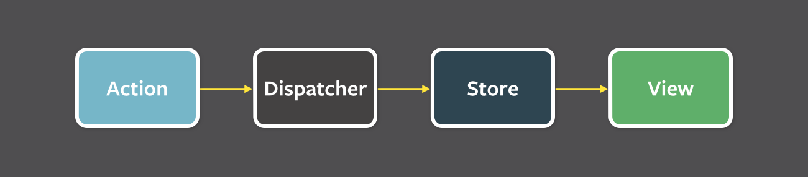
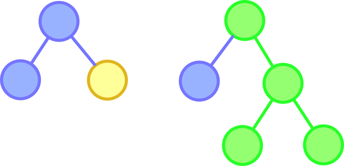

What is it?
- “Predictable state container for JavaScript apps”
- Created by Facebook in June 2015
- Inspired by Flux and Elm
Why Redux?
Predictability
Unidirectional Flow
Immutable
Simplicity

At a Glance
import { createStore } from 'redux'
// Initial State
const initialState = { count: 0 }
// Reducer
let reducer = (state = {}, action) => {
switch (action.type) {
case 'INCREMENT':
return { count: state.count+1 }
default:
return state
}
}
const store = createStore(reducer, initialState)
// Subscribe and log out
store.subscribe((state) => {
console.log('count:', state.count)
})
// Action Creator
function increment() {
return { type: 'INCREMENT' }
}
function ticker() {
store.dispatch(increment())
setTimeout(ticker, 1000)
}
ticker()
State
type State = any
From the example
// Initial State
const initialState = { count: 0 }
Actions
type Action = Object
From the example
{ type: 'INCREMENT' }
Action Creators
type ActionCreator = (...args: any) => Action | AsyncAction
From the example
function increment() {
return { type: 'INCREMENT' }
}
Usage
store.dispatch(increment())
Reducers
type Reducer<S, A> = (state: S, action: A) => S
From the example
let reducer = (state = {}, action) => {
switch (action.type) {
case 'INCREMENT':
return { count: state.count+1 }
default:
return state
}
}
But wait, there's more
- Store Creators
- Async Actions
- Middleware
Questions
Thank you!
Source @ github.com/danielkrainas/presents-redux
Presentation @ danielkrainas.github.io/presents-redux